Zajmijmy się podstawowymi znacnzikami, dzięki którym będziemy mogli formatować tekst na różne sposoby:
<sup><∕sup> oraz <sub><∕sub>
<sup><∕sup> Tworzy indeks górny w tekście
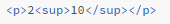 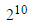<sub><∕sub> Tworzy indeks dolny w tekście
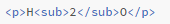 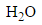<small><∕small>
Small zmiejsza czcionkę tekstu. Wpisując powyższy znacznik jeden wewnątrz drugiego <small><small><∕small><∕small>, można zmniejszyć rozmiar tekstu o kilka wielkości.
<em><∕em> oraz <strong><∕strong>
Em oraz strong odnoszą się do istotnych części tekstu
<em><∕em>
To tekst ważny, innaczej: zaakcentowany. Przypomina swoim wygłądem kursywę, lecz nią nie jest bezpośrednio.
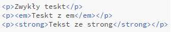<strong><∕strong>
Silnie wyróżnia fragment tekstu. Przypomina swoim wygłądem czcionkę pogrubioną, lecz róznież nie jest nią ostatecznie.
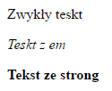<blockquote><∕blockquote>
W tej sekcji umieszczany jest tekst, będący cytatem bądź fragmentem z jakiegoś źródła. Pochodzenie tekstu definiujemy poprzez poprzez atrybut cite w którym umieszczamy link źródłowy.
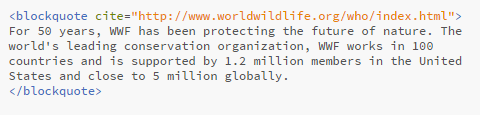 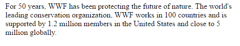<pre><∕pre>
W przeciwieństie do znacznika <p><∕p>, tekst preformatowany może zawierać znaki w postaci spacji, enterów czy tabulatorów i zostaną one wyświetlone w przeglądarce.
<code><∕code>
W tym znaczniku umieszczamy fragmenty kodu komputerowego. Jego założeniem jest wyświetlanie czcionki o stałej szerokości.
<cite><∕cite> oraz <q><∕q>
Znaczniki <cite> oraz <q> służą do cytowania określonych fragmentów tekstu.
<cite><∕cite>
Za pomocą cite umieszczamy tytuły na stronie. Nie dodaje on cudzysłowów.
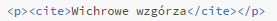 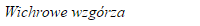<strong><∕strong>
Znacznik q dokłada jedynie sam cudzysłów do tekstu który sie w nim znajduje.
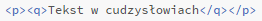 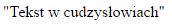<i><∕i>
Tekst zostaje napisany kursywą.
<b><∕b>
Za pomocą <b> od słowa bold tekst zostaje pogrubiony.
<del><∕del> oraz <ins><∕ins>
Znaczniki <del> raz <ins> wprowadają do tekstu linie poziome odpowiednio wzdłuż tekstu i tuż pod nim.
<del><∕del>
Przekreśla dany tekst.
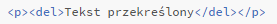 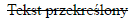<ins><∕ins>
Powoduje podkreślenie zawartości.
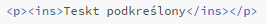 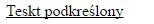<br∕> oraz <hr∕>
Zanczniki <br∕> oraz <hr∕> służą do odzielenia części tekstu od siebie.
<br∕>
Przerzuca dalszą część tekstu do kolejnej linii. Działa jak enter.
<hr∕>
Tworzy poziomą linię na długości dokumnetu oddzielając tym samym elementy.